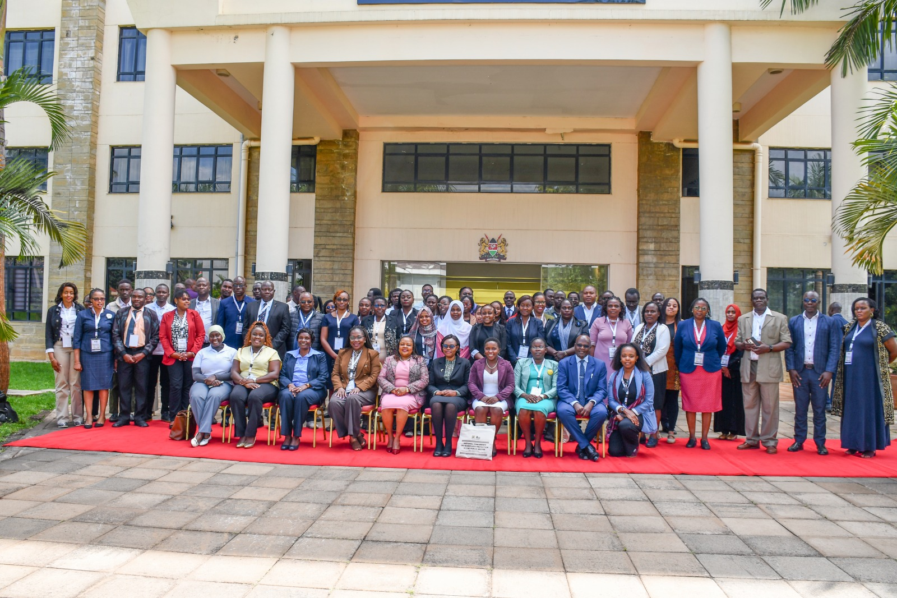

Workplace Violence is a Human Rights Issue, Not Just a Labour Concern

Commissioner Dr. Wamalwa Dennis addressed participants at the Kenya School of Government, where he underscored that workplace violence is not merely a labour issue, but fundamentally a human rights issue that public institutions must confront with urgency and resolve.
Speaking to an audience drawn from public institutions, Commissioner Wamalwa emphasized the need for state agencies to build workplace cultures anchored on dignity, safety, accountability, and respect. He noted that the wellbeing of employees within public institutions is inseparable from the broader human rights obligations that these institutions are bound to uphold.
“Workplace violence is not just a labour issue — it is a human rights issue.”
Making accountability real
He further observed that human rights accountability becomes real only when institutions take deliberate steps to prevent harm, protect victims, and ensure justice is delivered without fear or favour. According to Commissioner Wamalwa, this requires clear reporting mechanisms, protection for whistleblowers and victims, and consistent enforcement of consequences for perpetrators, regardless of rank or influence.
The Commissioner called on leaders within public institutions to take personal responsibility for fostering safe working environments, noting that a culture of accountability must be driven from the top for it to take root across all levels of an institution.
The engagement at the Kenya School of Government forms part of KNCHR’s ongoing efforts to work with public institutions in strengthening human rights compliance, promoting safe workplaces, and ensuring that victims of workplace violence and harassment can access justice without fear of retaliation.